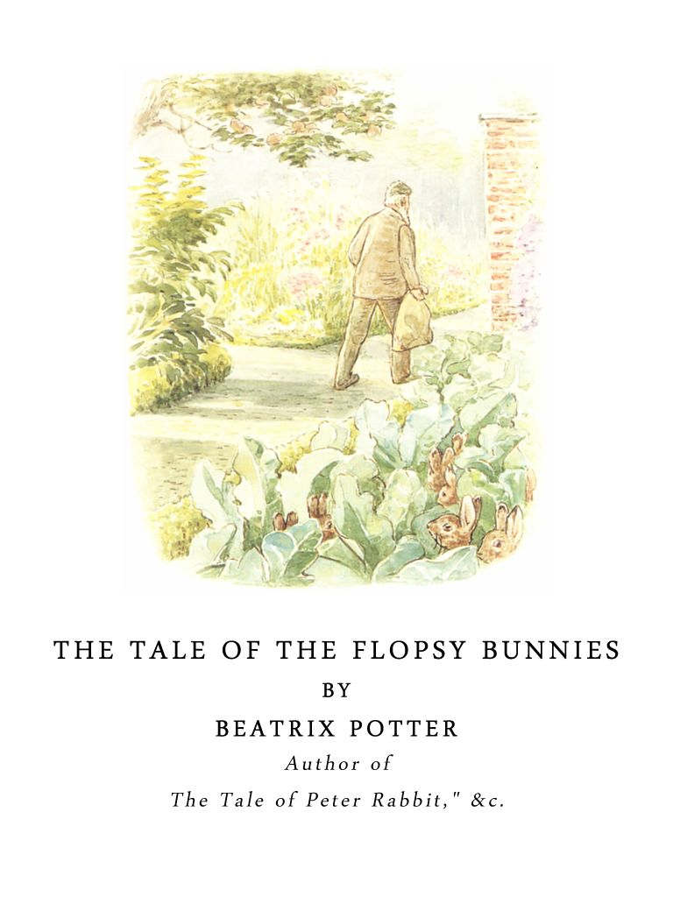

🏠
日
月
縦書き／横書き


| 【対訳】ピーターラビット ③ フロプシーのこどもたち -THE TALE OF THE FLOPSY BUNNYS- | |
| ビアトリクス・ポター | |

レタスを食べると催眠薬のように効くということです。
わたしはレタスを食べて眠くなったことはありません。もっともわたしはうさぎではありませんけどね。
でもプロプシーのうちの子どもたちには、確かに睡眠薬のように効きました。
It is said that the effect of eating too much lettuce is "soporific."
I
have never felt sleepy after eating lettuces; but thenI
am not a rabbit.
They certainly had a very soporific effect upon the Flopsy Bunnies!
ベンジャミン・バニーは大人になると、いとこのフロプシーと結婚しました。ふたりには子どもがたくさんでき、その子どもたちはみな、大変むこうみずで元気でした。
わたしはこの子どもたちの名前をいちいち覚えていませんが、みんなはいつも、この仔うさぎたちを「フロプシーのところの子どもたち」と言っていました。
When Benjamin Bunny grew up, he married his Cousin Flopsy. They had a large family, and they were very improvident and cheerful.
I do not remember the separate names of their children; they were generally called the "Flopsy Bunnies."
ベンジャミンの家には食べ物がいつも充分にある、というわけにはいきませんでした。――そこでベンジャミンはちょくちょくプロプシーの姉弟のピーターのところへキャベツを借りに行きました。ピーターはキャベツ畑を持っていたのです。
As there was not always quite enough to eat,――Benjamin used to borrow cabbages from Flopsy's brother, Peter Rabbit, who kept a nursery garden.
けれども、時にはピーターのところにも、わけてやるキャベツのない時がありました。
Sometimes Peter Rabbit had no cabbages to spare.
こんな時、プロプシーの子どもたちは草原を超えてゴミ捨て場まで出かけます。ゴミ捨て場はマグレガーさんの野菜畑の外の濠の中にありました。
When this happened, the Flopsy Bunnies went across the field to a rubbish heap, in the ditch outside Mr. McGregor's garden.
マグレガーさんのゴミ捨て場にはいろいろなものがごちゃまぜに捨ててありました。ジャムの壺やら、紙の袋やら、芝刈り機で刈った細かい芝やら（この芝はいつも油っぽい味がしました。）、腐った野菜の芯やら、それに古いブーツも１つか２つ......。ある日のこと―――ああ、なんてうれしいんでしょう！―――とうが立って花の咲いてしまったレタスがたくさん捨ててありました。
Mr. McGregor's rubbish heap was a mixture. There were jam pots and paper bags, and mountains of chopped grass from the mowing machine (which always tasted oily), and some rotten vegetable marrows and an old boot or two. One day――oh joy!――there were a quantity of overgrown lettuces, which had "shot" into flower.
フロプシーの子どもたちは、おなかがはちきれそうになるまで、そのレタスをつめこみました。そのうち、１匹、また１匹と、眠気に襲われ、細かい草の中で横になりました。
ベンジャミンは子どもたちほど正体もなく眠り込みはしませんでした。そこで、眠る前に、ハエ除けに紙袋を頭にかぶることができました。
The Flopsy Bunnies simply stuffed lettuces. By degrees, one after another, they were overcome with slumber, and lay down in the mown grass.
Benjamin was not so much overcome as his children. Before going to sleep he was sufficiently wide awake to put a paper bag over his head to keep off the flies.
子どもたちはあたたかい陽だまりで気持ちよく眠り続けました。野菜畑の向こうの芝生の方から芝刈り機のカタカタという音が聞こえてきます。青バエは、石垣のあたりでブンブンうなり、小さい年寄りねずみがジャムの壺の間で何かをつまみ食いしていました。
（わたしはこのねずみの名前を知っています。お教えしますと、これは、しっぽの長い野ねずみのトマシナ・チュウチュウです。）
The little Flopsy Bunnies slept delightfully in the warm sun. From the lawn beyond the garden came the distant clacketty sound of the mowing machine. The bluebottles buzzed about the wall, and a little old mouse picked over the rubbish among the jam pots.
(I can tell you her name, she was called Thomasina Tittlemouse, a woodmouse with a long tail.)
ねずみは紙袋の上をかけ歩いてベンジャミンを起こしてしまいました。
ねずみは平謝りに謝って、わたしはピーター・ラビットの友達です、と言いました。
She rustled across the paper bag, and awakened Benjamin Bunny.
The mouse apologized profusely, and said that she knew Peter Rabbit.
ねずみとベンジャミンが石垣のすぐ下で話し合っていますと、頭の上で重い足あとがしました。そしていきなりマグレガーさんが、刈ってきた芝を一袋、眠っている仔うさぎの上にあけました！ ベンジャミンは紙袋の中に入り込み、ねずみはジャムの壺の中に隠れました。
While she and Benjamin were talking, close under the wall, they heard a heavy tread above their heads; and suddenly Mr. McGregor emptied out a sackful of lawn mowings right upon the top of the sleeping Flopsy Bunnies! Benjamin shrank down under his paper bag. The mouse hid in a jam pot.
仔うさぎたちは、にわか雨のように降ってきた芝の下で眠ったままかわいくにっこりしました。けれど、レタスが睡眠薬のようによく効いていたので目を覚ましません。
仔うさぎたちは、おかあさんのプロプシーが乾草の寝床の中へ自分たちをくるんでくれる夢を見ていたのです。
マグレガーさんは袋をあけてからゴミ捨て場を見下ろしました。芝の中から妙な小さい耳が突き出ています。マグレガーさんはしばらくその耳をじっと見ていました。
The little rabbits smiled sweetly in their sleep under the shower of grass; they did not awake because the lettuces had been so soporific.
They dreamt that their mother Flopsy was tucking them up in a hay bed.
Mr. McGregor looked down after emptying his sack. He saw some funny little brown tips of ears sticking up through the lawn mowings. He stared at them for some time.
そのうち、ハエが1
匹、ひとつの耳に止まると、その耳が動きました。
マグレガーさんはゴミ捨て場に降りてきました。
「小さいうさぎが１、２、３、４、５、６匹！」と言いながら、マグレガーさんは仔うさぎたちを袋の中へ入れました。仔うさぎたちは寝床でおかあさんに寝返りを打たせてもらう夢を見ながらちょっと身動きしましたが、目は覚ましませんでした。
Presently a fly settled on one of them and it moved.
Mr. McGregor climbed down on to the rubbish heap――
"One, two, three, four! five! six leetle rabbits!" said he as he dropped them into his sack. The Flopsy Bunnies dreamt that their mother was turning them over in bed. They stirred a little in their sleep, but still they did not wake up.
マグレガーさんは袋の口をきっちり縛って、石垣の上に置きました。
そして芝刈り機を片づけにいきました。
Mr. McGregor tied up the sack and left it on the wall.
He went to put away the mowing machine.
マグレガーさんが向こうへいっている間に、今まで家で待っていたフロプシー・バニーが草原をやってきました。
フロプシーは、何だか妙なものがあるぞ、というように袋を見て、いったいみんなはどこへ行ってしまったのだろうと思いました。
While he was gone, Mrs. Flopsy Bunny (who had remained at home) came across the field.
She looked suspiciously at the sack and wondered where everybody was?
その時、ねずみがジャムの壺から出てきて、ベンジャミンが頭から袋を取りました。そして、ふたりはフロプシーに今起こった悲しいできごとの話をしました。
ベンジャミンとフロプシーはどうしていいやら途方に暮れました。ふたりには袋のひもをほどくことはできません。
けれどもトマシナ・チュウチュウはなかなかうまいことを思いつくねずみで、袋の隅をかじって穴をあけてくれました。
Then the mouse came out of her jam pot, and Benjamin took the paper bag off his head, and they told the doleful tale.
Benjamin and Flopsy were in despair, they could not undo the string.
But Mrs. Tittlemouse was a resourceful person. She nibbled a hole in the bottom corner of the sack.
そこでベンジャミンたちは子どもたちを袋からひっぱり出し、つねって目を覚まさせました。
それから、空の袋の中には腐った野菜の芯を３つと古い靴ブラシを１つと、しなびたカブを２つ入れておきました。
The little rabbits were pulled out and pinched to wake them.
Their parents stuffed the empty sack with three rotten vegetable marrows, an old blacking-brush and two decayed turnips.
それからみんなは、繁みの陰に隠れて、マグレガーさんの来るのを待ち受けました。
Then they all hid under a bush and watched for Mr. McGregor.
マグレガーさんは戻ってきて袋を取り上げると、家に帰っていきました。
袋はだいぶ重そうにマグレガーさんの手からぶら下がっていました。
フロプシーの子どもたちは、そのあとから捕まらないように少し離れてついていきました。
Mr. McGregor came back and picked up the sack, and carried it off.
He carried it hanging down, as if it were rather heavy.
The Flopsy Bunnies followed at a safe distance.
マグレガーさんが家に入っていくのが見えました。
そこでみんなはそっと窓のそばに寄っていって耳を澄ましました。
The watched him go into his house.
And then they crept up to the window to listen.
マグレガーさんは石の床の上に、ドスン！ と袋を置きました。中に入っていたのがフロプシーの子どもたちだったら、どんなに痛かったことでしょう。
それからマグレガーさんが椅子を引き寄せる音がしてくすくす笑う声が聞こえ―――
「小さいうさぎが１、２、３、４、５、６匹よ！」という声がしました。
Mr. McGregor threw down the sack on the stone floor in a way that would have been extremely painful to the Flopsy Bunnies, if they had happened to have been inside it.
They could hear him drag his chair on the flags, and chuckle――
"One, two, three, four, five, six leetle rabbits!" said Mr. McGregor.
「え、何ですって？ 今度はうさぎどもが何を食べたんです？」とマグレガーさんの奥さんが聞きました。
「小さい太ったうさぎが、１、２、３、４、５、６匹よ！」マグレガーさんが、指で数えながら、また言いました。
「１、２、３―――」
「袋の中さ、１、２、３、４、５、６匹入っているんだ」マグレガーさんは答えました。
（一番小さい仔うさぎは窓枠の上に上りました。）
"Eh? What's that? What have they been spoiling now?" enquired Mrs. McGregor.
"One, two, three, four, five, six leetle fat rabbits!" repeated Mr. McGregor, counting on his fingers――"one, two, three――"
"Don't you be silly; what do you mean, you silly old man?"
"In the sack! one, two, three, four, five, six!" replied Mr. McGregor.
(The youngest Flopsy Bunny got upon the window-sill.)
マグレガーの奥さんは、袋を掴んで触ってみました。確かに何かが６つ入っています。けれども、とても硬くて、みな違った形をしているから老いぼれうさぎに違いない、と奥さんは言いました。
「硬くって食べられるものですか。だけど皮は私の古い外套の裏にするには上等ですよ」
「お前の外套の裏だと？」マグレガーさんが大きな声で言いました。「皮はわしが売ってたばこを買うんだ！」
「そうよ、うさぎたばこをね！ わたしはこいつらの皮を剥いで頭をちょん切ってやる」
Mrs. McGregor took hold of the sack and felt it. She said she could feel six, but they must be old rabbits, because they were so hard and all different shapes.
"Not fit to eat; but the skins will do fine to line my old cloak."
"Line your old cloak?" shouted Mr. McGregor――"I shall sell them and buy myself baccy!"
"Rabbit tobacco! I shall skin them and cut off their heads."
奥さんは、袋のひもをほどいて中へ手を入れました。
そして野菜に触るとカンカンに怒ってしまいました。奥さんは、マグレガーさんがこんなことを「わざとしたのだ」と言いました。
Mrs. McGregor untied the sack and put her hand inside.
When she felt the vegetables she became very very angry. She said that Mr. McGregor had "done it a purpose."
そしてマグレガーさんもすっかり怒ってしまいました。腐った野菜の芯が１つ台所の窓のところに飛んできて、一番小さいフロプシーの子どもにあたりました。
そうとう痛かったですよ！
And Mr. McGregor was very angry too. One of the rotten marrows came flying through the kitchen window, and hit the youngest Flopsy Bunny.
It was rather hurt.
そこで、ベンジャミンとフロプシーはもうそろそろ家に帰った方がいいと思いました。
Then Benjamin and Flopsy thought that it was time to go home.
こういうわけでマグレガーさんはたばこを買うことができず、奥さんはうさぎの皮を取ることができませんでした。
けれども次のクリスマスにトマシナ・チュウチュウは、うさぎの毛をたくさんもらいましたので、外套と頭巾と立派なマフ（マフラー？）とあたたかい手袋を作りました。
おしまい
So Mr. McGregor did not get his tobacco, and Mrs. McGregor did not get her rabbit skins.
But next Christmas Thomasina Tittlemouse got a present of enough rabbit-wool to make herself a cloak and a hood, and a handsome muff and a pair of warm mittens.
【対訳】ピーターラビットシリーズ ③
フロプシーのこどもたち
－THE TALE OF THE FLOPSY BUNNIES－
発行日 ２０１４年２月５日
著 者 ビアトリクス・ポター
発行者 赤井 仁
発行所 ゴマブックス株式会社
〒１０７－００５２
東京都港区赤坂８－５－40
ペガサス青山７１０
(c) GOMA－BOOKS Co.,ltd. 2014